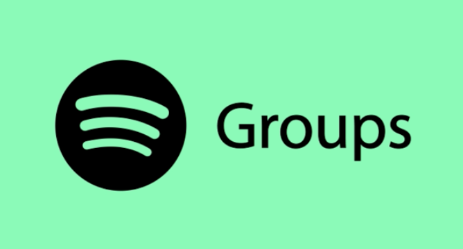

Petra Olsson
M.Sc student | Interactive media technology | KTH
Welcome to my portfolio! I'm a M.Sc. student at KTH currently on my fifth year at the Media Technology program, and proceeding with my master in Interactive media technology with Visual Media as an individual track. This spring I'm doing my master thesis at Adverty AB. You can here in my portfolio see some of the projects I've done in the latter years of my studies. You can also read more about my studies and previous experiences in my
CV!

Photo by: Linnea Holm
Plåtniklas
Interaction programmer | Modeler
Plåtniklas is a game that integrates both VR and AR, where the two worlds co-exist on a one to one scale. Thus the AR player can see the VR player, and vice versa. They will see the same environment, and the changes made to that environment. Both of them can interact with the world and its objects, as well as with each other. You can see a selection of pictures and videos in the drop-down below, or please visit the website for more information!
For this project I was mostly responsible for devloping the synchronisation of the VR and AR world, enabling them to see the same objects in the exact same positions in world space. As well as Modeler, modeling the Helicopter and animation, and developing parts of the game mechanic.
This project was developed togheter with Olivia Bengtsson, Viktor Ceder, Anton Martinsson and Linnéa Granlund.
Soar & Fall
Project Leader | Modeler | Interaction programmer
Soar & Fall is a slowpace, exploritative game set in a broken world high up in the clouds. The aim of the game is to solve small puzzles to make your way through all of the soaring islands. This project will be part of the permanent exhibit Play Beyond Play at Tekniska museet in Stockholm from May 2019. To read more about the project please visit the website or look at the videos and pictures in the dropdown!
In this project I took on the roll as the project leader, divding work in an agile manner. I also operated as a modeler, designing parts of the objects in the world. Pay extra attention to the growing flower which is modeled and animated. And also developed a lot of the gameplay interactions.
This project was developed togheter with Kasper Karlgren, Dúi Ardal, Julien Rouault and Axel Soll.

Spotify groups
Designer
In this project the task was to build a high-fidelity prototype to enhance a music product. We choose to work with spotify and try to improve it. Through several iterations of our idea, and working accordingly to the double diamond scheme we ended up with our final product Spotify groups. The idea is to have a collaborative playlist, and share playlists and music styles with your friends. Please have a look at our cool video! The project was created using the prototyping tool Justinmind.
My main resposibilties in this project was Ux designer as well as prototyping layup.
This project was developed toghether with Felix Norén, Erik Lindström and Anton Martinsson.

Multimodal
Developer
In this project we evaluated different controller and steering possibilties in virtual reality. We evaluated whether controller-based steering or head movement-based steering was superiour in regards to efficiency and effectiveness. We found that using the head to steer was better in all regards, and caused less motion sickness than that of a controller. We tested the steering alternatives through a flight simulator. Please have a look at the cool video!
This project was developed toghether with Felix Norén, Erik Lindström and Anton Martinsson.

Mission Emission
Designer
This was a project developed in the Information Visualization course given at KTH. Our group took an offer from Stockholm Enviromental Institute to develop a prototype for visualizing emissions via nautical export from Brazil. I had the role of front-end developer and UI-designer. See the website for more information!
This project was developed toghether with Gustav Bergman, Felix Norén, Erik Lindström, Anton Martinsson, Oscar Ström, Axel Weinz and Andreas Almqvist.
Education
Master of Science in Interactive Media Technology (Ongoing)
Track Visual Media
August 2017- June 2019
KTH Royal Institute of Technology, Stockholm
Bachelor of Science in Interactive Media Technology
August 2014 - June 2017
KTH Royal Institute of Technology, Stockholm
Skills
HCI, UX, Interaction Design
Programming
JavaScript, C#, HTML, CSS, Python
Design
Interface prototyping, Persona & Scenario, Storyboarding
Research
Usability Testing, Interview, Survey
Tools
Unity, Adobe Illustrator
Languages
Swedish, English